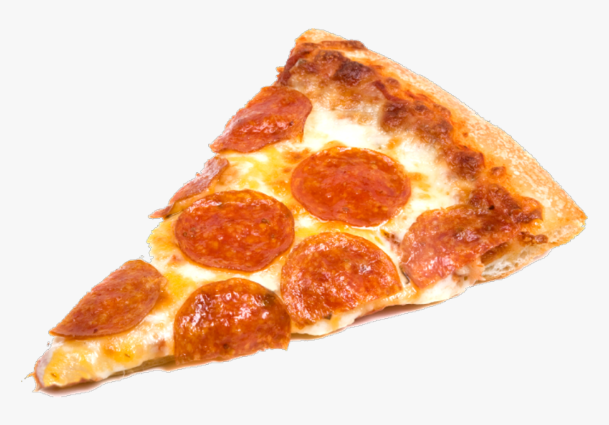

Pepperoni Pizza

Description
This is a classic recipe, showing how to make a pepperoni pizza. In total, you will need 6 ingredients for the dough,
and 9 ingredients for the topping. This pizza takes about 45-60 minutes to make.
Ingredients
For the dough:
- 2 and a half cups flour
- 1 teaspoon salt
- 1 teaspoon sugar
- 1 tablespoon fast rise yeast
- 1 cup water
- 1 tablespoon oil
For the toppings:
- 1/4 cup tomato sauce
- 1 teaspoon italian seasoning
- 1/2 teaspoon garlic powder
- 1/2 teaspoon salt
- 1/8 teaspoon pepper
- 1 and a half cups pepperoni slices
- 1 cup shredded mozzarella cheese
- 1 cup shredded monterey jack cheese
- 3 tablespoons grated parmesan cheese
Steps:
- In a large bowl, mix the first 4 ingredients.
- Mix water and oil, and add it to the flour mixture.
- Turn onto floured surface, and knead for 2 minutes.
- Place in a greased bowl, turning to grease top.
- Cover and let it rise for 20 minutes.
- Punch down, place on a 12 inch, greased pizza pan.
- Pat it into a circle.
- For the topping: mix the first 5 ingredients, and spread it over the crust.
- Put a few of the pepperoni slices on top of the sauce.
- Sprinkle with half the mozzeralla, half the monterey jack, and half the parmesan.
- Put the rest of the pepperoni slices on the pizza.
- Repeat the cheese layer.
- Bake at 400 degrees for 20 minutes or until light brown.